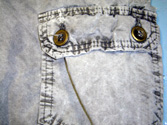
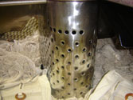
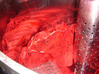
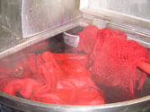
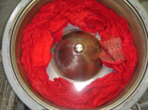
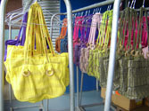
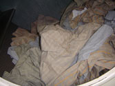
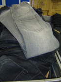
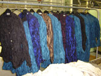
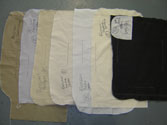

Pigment verven

Verven van wol, zijde en polyamide
  
 
Het verven van gevoelige stoffen zoals wol, zijde en polyamide gebeurt in speciale machines die de kleding laten bewegen in een stilstaande trommel. Hierdoor treedt er geen vervilting op van de wol. Het verfproces gebeurt op 90 graden zodat goede was- en lichtechtheden worden bereikt.
Enzymen was en siliconen

Stone wash
Het is mogelijk om stonewash producties te behandelen wanneer met bijvoorbeeld een enzym het beoogde resultaat niet wordt bereikt.
Bleken Black denim

Crushen (kreuken)

Biowas of anti-pilling
Onze machines zijn uitermate geschikt voor behandeling met enzymen.
Was testen op krimp
 |